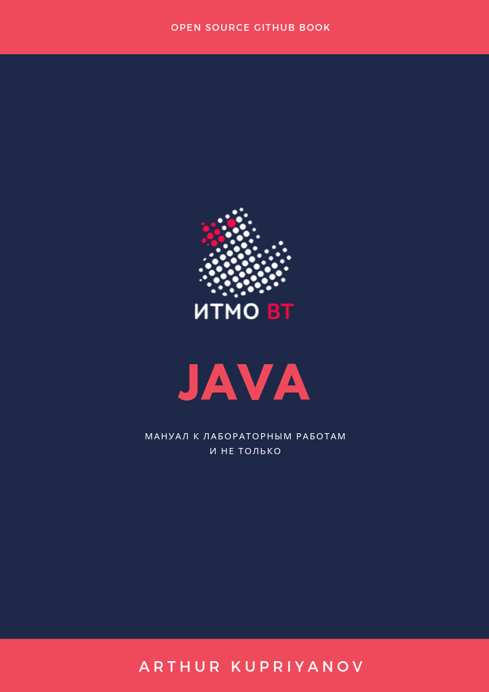

Обратного пути нет. Все мы по началу думаем, что сможем завязать с программированием…
Письмак
Дисклеймер
В мануале с малой долей вероятности могут быть ошибки или неточности. Сообщить о них можно по VK : https://vk.com/apploidxxx
Этот мануал не сборник ответов к вопросам, которые зададут вам практики на первой лабе. Он скорее поможет вам достичь цели первой лабораторной работы - "понять с чем вы имеете дело".
Примеры приведенных кодов в каталоге examples/manual-1
ДисклеймерО Java в целомЯзык Java. Особенности языка.ПрактикаJIT-компиляцияПереходя к программированиюПримитивные типы данных в JavaЦелые типыТипы с плавающей точкойЦелочисленные типы и их значенияТипы данных с плавающей точкой, множества значений и значенияJAR и манифестыОстальные контрольные вопросыПриложение А. AOT- и JIT-компиляцияAOTJITПриложение Б. Использованная литератураООП в контексте Java (редактируется)Объектно-Ориентированное ПрограммированиеМини-вступлениеДля "опытных" пользователей компьютераКанонКузнечикООП в JavaКонструкторыСтек и кучаСсылочные типыОбласти данных в рантаймеРегистр PCСтек виртуальной машины JavaКучаЧто и где хранится?Зачем нужен стек в Java?
О Java в целом
Язык Java. Особенности языка.
Меня всегда забавлял этот контрольный вопрос в описании первой лабораторной работы, потому что он слишком абстрактный и непонятно, что именно нужно знать и отвечать на этот вопрос.
Так в чем же особенность языка Java? Думаю, самая всем известная его особенность - это кроссплатформенность.
Ну, кроссплатформенность это, конечно, хорошо, но каким образом она достигается?
Чтобы понять это, давайте сначала рассмотрим прародитель языка Java, всеми известный C++. Вашу программу, написанную на языке Си, нужно будет компилировать под разные целевые платформы (Windows, Mac и прочее), которые будут работать только под них.
А что значит компиляция? Почему под разные платформы вам нужно создать разные скомпилированные программы?
Опять появляется множество вопросов, на которые ответить, не зная основ компьютерной архитектуры - не так уж и просто ответить.
Начнем с архитектуры вашего любимого устройства:

Более подробную информацию вы можете найти здесь или прочитав книгу "Архитектура компьютера" Э.Таненбаума (я бы не советовал сейчас нагружать ваш мозг этим, но рано или поздно вам все равно, скорее всего, придется прочитать его (ОПД))
А здесь я попытаюсь рассказать вкратце и поверхностно.
Существует огромная разница между тем, что удобно людям, и тем что могут компьютеры. Мы хотим делать X, но компьютеры в то же время могут делать только Y. Из-за этого возникает проблема.
Эту проблему можно решить двумя способами. Оба подразумевают разработку новых команд, более удобных для человека, чем встроенные машинные команды. Эти новые команды в совокупности формируют язык, который будем называть Я1. Встроенные машинные команды - Я0. Компьютер может исполнять только программы, написанные на его машинном языке Я0.
Логично предположить, что в любом случае нам нужно исполнить программу написанную на Я1, когда компьютеру доступен лишь язык Я0.
Первый способ исполнения программы, написанной на языке Я1, подразумевает замену каждой команды эквивалентным набором команд на языке Я0. В этом случае компьютер исполняет новую программу, написанную на языке Я0, вместо старой программы, написанной на Я1. Эта технология называется трансляцией.
Трансляторы, которые транслируют программы на уровень 3 или 4 (см. рисунок выше), называются компиляторами.
Есть также второй способ, который заключается в создании на языке Я0 программы, получающей в качестве входных данных программы, написанные на языке Я1. При этом каждая команда языка Я1 обрабатывается поочередно, после чего сразу исполняется эквивалентный набор команд языка Я0. Эта технология не требует составления новой программы на Я0. Она называется интерпретацией, а программа которая осуществляет интерпретацию, называется интерпретатором.
А теперь представим себе виртуальную машину, для которой машинным языком является язык Я1. Назовем такую машину М1, а машину для работы с языком Я0 - М0. Если бы такую машину М1 можно было сконструировать без больших денежных затрат, язык Я0 был бы не нужен. Можно было бы писать программы сразу на языке Я1, а компьютер сразу бы их исполнял. Тем не менее, такие машины, возможно, не удастся создать из-за чрезмерной дороговизны или трудностей разработки. Поэтому и появилось понятие виртуальная машина. Люди вполне могут писать ориентированные на неё программы. Эти программы будут транслироваться или интерпретироваться программой, написанной на языке Я0, а сама она могла бы исполняться существующим компьютером. Другими словами, можно писать программы для виртуальных машин так, будто эти машины реально существуют.
JVM - это виртуальная машина, но не стоит путать её с System virtual machines (которые могут обеспечивать функциональность, необходимую для выполнения целых операционных систем).
JVM относится к Process virtual machines, которые предназначены для выполнения компьютерных программ в независимой от платформы среде. Например, он исполняет байт-код, который можно считать языком Я1, а машина на которой стоит наш JVM (М1) это М0, умеющий выполнять программы Я0. Другими словами, JVM физически не существует - это по сути программа, написанная на языке Я0, которая может обрабатывать программы с языком Я1, интерпретируя его в язык Я0.
Таким образом, JVM разный под каждую платформу, так как ему нужно интерпретировать входную программу (байт-код) в программу, которую может понять конкретная платформа (Windows, Mac etc).
Давайте поймем разницу между байт-кодом (программа для JVM) и двоичным кодом, который понимает "процессор":
Вот пример машинного кода и его представления на языке Ассемблера. Слева указан порядковый номер (адрес) первого байта команды. Во второй колонке мы видим байты команды, они записаны в восьмеричной системе счисления. В третьей колонке мнемоники Ассемблера, которые упрощают восприятие программы человеком.
xxxxxxxxxx004: 003 010 lbl adda #8 immediate value decimal006: 103 010 addb #010 same thing in octal010: 024 001 lda b memory reference012: 235 220 stx (ptr) indirect reference014: 306 204 ora data,x indexed016: 337 220 lnega (ptr),x indirect/indexed020: # jumps and calls020: 344 004 jmp lbl unconditional jump022: 043 030 jane lbl2-2 jump if a not equal 0024: 257 221 jxgt (ptr+one) jump indirect if x gt026: 364 041 call sub call to subroutine030: 174 220 cbeq (ptr) call indirect if b eq 0032: # set and skips032: lbl2032: 122 204 set1 fox,2 set bit 2 of data to 1034: 272 205 skp0 data+1,7 skip if bit 7 is 0036: # shifts and rotates036: 001 shra 1+SHIFT shift a right 4 plcs037: 361 rolb 2 rotate b left 2 places040: 000 hlt halt041: 000 sub db 0 return address042: 200 nop no op043: 023 222 lda #0222045: 123 144 ldb #100047: 360 sys system call (extension)050: 023 222 sysp 0222,100 system call using parms052: 123 144054: 360055: 354 041 jmp (sub) returnНе надо вдаваться в подробности, просто пример изнутри.
Теперь о байт-коде. Основной проблемой двоичного кода является его специфичность. Два разных устройства, например, ноутбук и мобильный телефон, имеют кардинально разные процессоры и кардинально разные наборы команд и кодов.
Один из способов проблемы переносимости и сложности это промежуточная виртуальная машина.
Виртуальный процессор работает также, как и реальный: он видит массив чисел, и воспринимает их как команды для выполнения. Байт-код внешне совершенно идентичен двоичному коду. Вот пример байт-кода виртуальной машины Java:
xxxxxxxxxx000: 03 iconst_0001: 3b istore_0002: 84 00 01 iinc 0, 1005: 1a iload_0006: 05 iconst_2007: 68 imul010: 3b istore_0011: a7 ff f9 goto -7Единственная разница заключается в том, что двоичный код исполняет физический процессор, а байт-код — очень простая программа-интерпретатор.
Итак, сделаем заключение:
Байт-код - это промежуточное представление программы, не привязанное к конкретной машинной архитектуре. Независимость от архитектуры машины обеспечивает переносимость, означающую, что уже разработанное (или скомпилированное) программное обеспечение может работать на любой платформе, поддерживающей JVM и абстракции языка Java.
В настоящее время язык программирования Java в значительной степени независим от виртуальной машины Java, так что буква "J" в аббревиатуре "JVM" немного вводит в заблуждение, поскольку JVM в состоянии выполнять любой язык JVM, который может сгенерировать корректный файл класса. Например, Scala, генерирующий байт-код для выполнения в JVM.
Как итог, можно сказать, что если вы напишите вашу программу в Windows (и допустим сделаете из него какой-нибудь jar-файл), то он сможет запуститься на Mac или Unix (по крайней мере, так задумано), если у них стоит JVM.
Практика
Давайте напишем простую программу Hello.java:
xxxxxxxxxxpublic class Hello { public static void main(String ... args){ for(int i=0;i<10;i++){ System.out.println("ITMO"); } }}Скомпилируем её с помощью команды javac:
xxxxxxxxxxjavac Hello.javaПосле того как вы её скомпилируете вы можете увидеть файл Hello.class - ваша скомпилированная программа, иначе говоря байт-код.
Запустить её можно командой java:
xxxxxxxxxxjava Hello
Прим. не надо указывать его расширение (.class) - необходимо и достаточно указать лишь его имя.
Java поставляется с дизассемблером файлов классов под названием jаvap, который позволяет изучать .сlаss-файлы. Взяв файл класса Hello и запустив javap -с Hello, мы получим следующий результат:
xxxxxxxxxxCompiled from "Hello.java"public class Hello {public Hello();Code:0: aload_01: invokespecial #1 // Method java/lang/Object."<init>":()V4: returnpublic static void main(java.lang.String...);Code:0: iconst_01: istore_12: iload_13: bipush 105: if_icmpge 228: getstatic #2 // Field java/lang/System.out:Ljava/io/PrintStream;11: ldc #3 // String ITMO13: invokevirtual #4 // Method java/io/PrintStream.println:(Ljava/lang/String;)V16: iinc 1, 119: goto 222: return}
Опять же пока не стоит вдаваться в подробности (хотя в моей памяти, вроде и бывало что спрашивали про основные команды, например, goto, bipush или istore)
Осталось чуть-чуть...
Итак, переходя ко второму контрольному вопросу: что же такое JVM, JRE и JDK?
С JVM мы в принципе более-менее разобрались - это виртуальная машина, на которой выполняются байт-коды.
JRE и JDK относительно проще, чем определение JVM:
- JRE ( Java Runtime Environment) - это среда выполнения Java - она, помимо прочего, содержит JVM и является тем, что вам нужно для запуска Java-программы. Она не содержит инструментов и утилит, таких как компиляторы или отладчики для разработки приложений.
- JDK (Java Development Kit) - является расширенным набором JRE и содержит все, что есть в JRE, а также такие инструменты, как компиляторы и отладчики, необходимые для разработки.
JIT-компиляция
Еще один из частых вопросов на лабах - что такое JIT-компиляция?
JIT (Just-in-Time, своевременная) компиляция появилась в HotSpot VM (см. приложение A), в котором модули программы (интерпретированные из байт-кода) компилируются в машинный код. Модулями компиляции в HotSpot являются метод и цикл.
JIТ-компиляция работает путем мониторинга приложения, выполняемого в режиме интерпретации, и выявления наиболее часто выполняемых фрагментов кода. В ходе анализа собирается информация, которая позволяет выполнять более сложную оптимизацию. Когда выполнение некоторого конкретного метода переходит установленный порог, профайлер запрашивает компиляцию и оптимизацию этого фрагмента кода.
JIТ-подход к компиляции имеет много преимуществ, но одним из главных является то, что он основан на данных трассировки, собранной на этапе интерпретации, что позволяет HotSpot принять более обоснованные и разумные решения, касающиеся оптимизации.
После трансляции исходного кода Java в байт-код и еще одного этапа JIТ-компиляции фактически выполняемый код очень существенно отличается от написанного исходного кода. Это ключевой момент, который будет управлять нашим подходом к исследованиям производительности. Код после JIТ-компиляции, выполняющийся виртуальной машиной, может выглядеть не имеющим ничего общего с оригинальным исходным кодом на Java.
Пример инлайнинга JIT-компилятора можно увидеть здесь: https://habr.com/ru/post/305894/
Переходя к программированию
Далее будут материалы касающееся непосредственно программирования на языке Java.
Примитивные типы данных в Java
Рассмотрим примитивные типы в JVM:
Виртуальная машина Java поддерживает следующие примитивные типы: числовые типы, boolean тип и типы с плавающей точкой
Целые типы
byte, содержит 8-битовые знаковые целые.
- Значение по умолчанию - ноль.
short, содержит 16-битовые знаковые целые.
- Значение по умолчанию - ноль.
int, содержит 32-битовые знаковые целые.
- Значение по умолчанию - ноль.
long, содержит 64-битовые знаковые целые.
- Значение по умолчанию - ноль.
char, содержит 16-битовые беззнаковые целые, представляющие собой кодовые точки таблицы символов Unicode в базовой странице UTF-16.
- Значение по умолчанию - нулевая кодовая точка ('\u0000')
Типы с плавающей точкой
float, содержит числа с плавающей точкой одинарной точности.
- Значение по умолчанию - положительный ноль.
double, содержит числа с плавающей точкой двойной точности.
- Значение по умолчанию - положительный ноль.
Значение boolean типа может быть true или false, значение по умолчанию false.
Целочисленные типы и их значения
Существуют следующие диапазоны для целочисленных значений:
- для типа byte от -128 до 127 (-2^7^ до 2^7^ - 1) включительно;
- для типа short от -32768 до 32767 (-2^15^ до 2^15^ - 1) включительно;
- для типа int от -2147483648 до 2147483647 (-2^31^ до 2^31^ - 1) включительно;
- для типа long от -9223372036854775808 до 9223372036854775807 (-2^63^ до 2^63^ - 1) включительно;
- для типа char от 0 до 65535 включительно;
Запоминать эти значения наизусть не надо, но можно хотя бы примерно представлять их границы по степеням двойки.
Например, может попасться задача такого рода:
xxxxxxxxxxpublic class ExampleWithByte{ public static void main(String ... args){ byte x = 127; x++; System.out.println(x); // -128 }}Эта программа при исполнении выводит -128. Объяснить это очень просто, зная диапазоны типов данных. А почему именно -128 это вопрос к дискретке и двоичному представлению чисел в машине.
Типы данных с плавающей точкой, множества значений и значения
Типами данных с плавающей точкой являются типы float и double соответственно 32-х битые значения одинарной точности и 64-х битные значения двойной точности. Формат чисел и операции над ними соответствуют спецификации IEEE Standard for Binary Floating-Point Arithmetic (ANSI/IEEE Std. 754-1985, New York).
Стандарт IEEE 754 включает в себя не только положительные и отрицательные значения мантиссы, но также и положительные и отрицательные нули, положительные и отрицательные бесконечности, и специальное не числовое значение NaN (Not-a-Number). NaN используется в качестве результата некоторых неверных операций, таких как деление нуля на нуль.
Все значения (кроме не-чисел NaN) множества чисел с плавающей точкой упорядочены. Если числа упорядочить по возрастанию, то они образуют такую последовательность: отрицательная бесконечность, отрицательные конечные значения, отрицательный ноль, положительный ноль, положительные значения и положительная бесконечность.
Сравнивая положительный и отрицательный ноль, мы получим верное равенство, однако существуют операции, в которых их можно отличить; например, деля 1.0 на 0.0, мы получим положительную бесконечность, но деля 1.0 на -0.0 мы получим отрицательную бесконечность.
Не-числа NaN не упорядочены, так что сравнение и проверка на равенство вернёт ложь, если хотя бы один из операндов не-число NaN. В частности проверка на равенство значения самому себе вернёт ложь тогда и только тогда, кода операнд не-число NaN. Проверка на неравенство вернёт истину, когда хотя бы из операндов не-число NaN.
JAR и манифесты
Статей про создание JAR и его приложений много, но бывает, что трудно понять даже простое, если ни разу не видели как это делается.
Приведу очень простой пример создания Jar-архива. Примеры будут в папке examples/manual-1/jar
Для начала создадим нашу программу и назовем её условно Lab.java:
xxxxxxxxxxpublic class Lab { public static void main(String ... args) { System.out.println("it works on my machine"); }}Скомпилируем:
xxxxxxxxxxjavac Lab.java
Получим байт-код Lab.class.
Чтобы запаковать его используем команду jar с параметрами c (create) и f(file).
xxxxxxxxxxjar cf Labpack.jar Lab.class
На выходе вы получите файл Labpack.jar, который запускается командой:
xxxxxxxxxxjava -jar Labpack.jar
Но программа не исполнится как задумано, а вместо этого выведет:
xxxxxxxxxxno main manifest attribute, in .\Labpack.jar
Дело в том, что в таком jar-пакете может быть несколько файлов и исполняющая машина не может знать какую из них выполнить.
Чтобы указать ему наш класс для выполнения создадим файл MANIFEST.MF.
Есть несколько способов для Unix-подобных систем. Пользуйтесь таким какой вам удобнее
Вот внутренности MANIFEST.MF
xxxxxxxxxxVersion: 6.6.6Main-Class: Lab
Здесь мы указали версию нашего пакета, а самое главное точку входа (класс Lab)
Команда теперь будет выглядеть следующим образом:
xxxxxxxxxxjar cfm Labpack.jar MANIFEST.MF Lab.class
Здесь важно соблюдать порядок:
- Имя jar-пакета
- Путь к манифесту
- Классы
Запустив его предыдущей командой java -jar Labpack.jar мы получим:
xxxxxxxxxxit works on my machine
Остальные контрольные вопросы
Мне не очень-то уж и хочется рассказывать про синтаксис языка Java - да, в некоторых из них есть не очевидные на первый взгляд нюансы, но проблем с базовыми вещами (for, for-each, while, do-while) быть не должно (тысячи и тысячи статей).
Поэтому я оставлю тут вопросы, на которые лучше знать ответ, и которые могут служить ориентиром:
xxxxxxxxxx1. Что такое JAR, для чего он нужен?1.1 Что такое манифест, основные параметры (Main-Class, Version ...)1.2 Как собирать JAR (консольная команда)2. Чем отличаются (что такое) JDK, JRE и JVM2.1 Что такое IDE?3. Что такое компиляция? Какие виды еще есть (интерпретация, трансляция...(на будущее))?3.1 Жизненный цикл Java программы4. Почему программу написанную на Java можно запускать на любой платформе?4.1 Какую роль в этом играет JVM?4.2 Что такое байт-код?5. Примитивные типы данных. Сколько их существует? Представление данных и их классификация5.1 В чем различия double и float?5.2 Сколько бит ответедено под каждый примитивный тип?5.3 Константы (final). Можно ли не инициализировать константу при объявлении?5.4 Преобразование и приведение типов. В чем отличие?5.4 (Сложнаааа) В чем отличие примитивных и ссылочных типов данных?5.5 В чем ошибка: byte a = 1, b =2; byte c = a + b;6. Основные методы библиотеки Math6.1 Вспомогательные пакеты Java. Пакет java.util (для чего он нужен).6.1 Как хранятся эти пакеты?7. Что такое NaN? В каких случаях он возникает и с какими типами данных?8. Зарезервированные лексемы (continue, for, break, else ...)9. Комментарии 3 вида (чучуть про джавадок)10. Линейные и нелинейные программы.10.1 синтаксис while, do-while, switch, тернарный оператор, foreach-цикл10.2 Что вы можете рассказать о конструкции: for(;;) { }10.3 Какие типы данных могут быть использованы в операторе switch?10.4 Как работает тернарный оператор?11. Стандартные потоки (out, err, in)11.1 Как использовать стандартные потоки ввода/вывода в Java?12. java.util.Arrays - работа с массивами12.1 Как устроены многомерные массивы?12.2 Сколько элементов может хранить массив?13. (Сложнааа) оператор "new"14. Работа со строками (trim, replace ...). Тип данных String15. (Сложнаааа, ни нада) goto в Java. Как ставить label?
Приложение А. AOT- и JIT-компиляция
В этом разделе мы обсудим и сравним раннюю (Ahead-of-Time - AОТ) компиляцию и компиляцию оперативную (Just-in-Time - JIТ)
AOT
Если у вас есть опыт программирования на таких языках, как С или С++, то вы знакомы с AОТ-компиляцией (возможно, вы всегда называли ее просто "компиляцией"). Это процесс, при котором внешняя программа (компилятор) принимает исходный текст (в удобочитаемом для человека виде) и на выходе дает непосредственно исполняемый машинный код.
Ранняя компиляция исходного кода означает, что у вас есть только одна возможность воспользоваться преимуществами любых потенциальных оптимизации
Скорее всего, вы захотите создать исполняемый файл, предназначенный для конкретной платформы и архитектуры процессора, на которой вы собираетесь его запускать. Такие тщательно настроенные бинарные файлы смогут использовать любые преимущества процессора, которые могут ускорить работу программы.
Однако в большинстве случаев исполняемый файл создается без знания конкретной платформы, на которой он будет выполняться. Это означает, что AОТ-компиляция должна делать консервативное предположение о том, какие возможности процессора могут быть доступны . Если код скомпилирован в предположении доступности некоторых возможностей, а затем все оказывается не так, этот бинарный файл не будет запускаться совсем .
Это приводит к ситуации, когда AОТ-скомпилированные бинарные файлы не в состоянии в полной мере использовать имеющиеся возможности процессора.
JIT
Оперативная компиляция ("в точный момент времени") - это общая технология, когда программы преобразуются (обычно из некоторого удобного промежуточного формата) в высоко оптимизированный машинный код непосредственно во время выполнения.
HotSpot и большинство других основных производителей JVM в значительной степени полагаются на применение этого подхода. При таком подходе во время выполнения собирается информация о вашей программе и создается профиль, который можно использовать для определения того, какие части вашей программы используются наиболее часто и больше всего выиграют от оптимизации.
Подсистема JIТ использует ресурсы VM совместно с вашей запущенной программой, поэтому стоимости такого профилирования и любых выполняемых оптимизаций должны быть сбалансированы с ожидаемым прирос ом производительности.
Стоимость компиляции байт-кода в машинный код платится во время выполнения; компиляция расходует ресурсы (процессорное время, память), которые в противном случае могли бы быть использоваться для выполнения вашей программы.
Поэтому JIТ-компиляция выполняется экономно, а VM собирает статистику о вашей программе (ищет "горячие пятна"), чтобы знать, где лучше всего выполнять оптимизацию.
Приложение Б. Использованная литература
- Tim Lindholm, Frank Yellin - JVM Specification Java SE8 Edition
- Брюс Эккель - Философия Java
- Benjamin Evans - Optimizing Java. Practical techniques for improving JVM application performance
- Письмак А.Е. - Конспекты лекций первого семестра
- Э. Таненбаум - Архитектура компьютера
- Ну и как всегда
stackoverflow
ООП в контексте Java (редактируется)
Весь материал, который Вы понимаете, сразу применяйте на практике. Придумывайте идеи и старайтесь реализовывать, используя то, чему научились на занятиях или при самостоятельном изучении.
Письмак
Объектно-Ориентированное Программирование
Мини-вступление
Чтобы понять "Что такое ООП?" мне понадобилось 3 недели (если не считать, что задолго до этого пытался изучить ООП в контексте C# и Python), я уже мог пользоваться этими объектами и использовать в своем Java-коде (к слову, это была усложненная версия первой лабы).
Но, по крайней мере, я так думал. На то, чтобы действительно понять всю суть ООП, у меня ушло намно-оо-го больше времени, и я до сих пор думаю, что не до конца понимаю ООП.
К чему я это? К тому, что читая какую-нибудь статью - да, вы будете знать как использовать ООП в разных языках, но не сможете ощутить всю их прелесть не покодив порядочное количество проектов. В этом я согласен с Письмаком и полностью поддерживаю его слова.
Для "опытных" пользователей компьютера
Если вы уже знаете что такое ООП на уровне свободного использования объектов на любом языке поддерживающим парадигму ООП, то сразу можете переходить к главе "ООП в Java"
Далее, мы рассмотрим ООП в общем плане, не привязывая чисто к Java, но для примеров будем использовать его.
Канон
Обычно, люди когда объясняют про всякие объекты, классы, их методы и тд, они начинают с класса. Ну, это вполне логично, потому что объект создается из класса.
Но я поступлю иначе, и сначала попытаюсь объяснить "что такое объект?".
Давайте попробуем связать его определение с тем, что мы уже знаем.
Кузнечик
Представим себе кузнечика. Пусть, это будет наш объект.
Какие у него есть свойства? Например, длина, окрас и пускай у него еще будет имя Боб.
Итак, попробуем записать нашего Боба:
xxxxxxxxxxGrig(кузнечик){length: 5;color: brown;name: "Bob";}
Прекрасно, а что он умеет делать? Скажем, например, прыгать. Давайте запишем это как функцию:
xxxxxxxxxxGrig{length: 5;color: brown;name: "Bob";function jump(){ "jump 25 cm" };function eat(){ "eat green grass" };}
Теперь, у нас есть объект - у него свойства (length, color, name) и методы (действия в данном случае)(jump, eat). Здесь важно понимать, что jump и eat - это функции, то есть выполняют какую-то операцию.
Но, насколько бы он не был интровертом, думаю, ему все равно нужна пара, поэтому давайте создадим ему девушку:
xxxxxxxxxxGrig{length: 4.9;color: green;name: "Alice";function jump(){ "jump 25 cm" };function eat(){ "eat green grass" };}
Когда у нас есть два объекта, попробуем сравнить их. У них те же имена свойств (length, color, name), но разные значения. В том числе, у них одинаковые имена методов (jump, eat).
А если у них имена всех свойств и методов совпадают - давайте сделаем какой-то шаблон, чтобы из него создавать эти объекты. Пусть, это будет шаблон с именем Grig и будем создавать эти объекты по этому шаблону. При этом функции везде одинаковые, поэтому пусть это сразу будет в шаблоне. Тогда нам нужно будет указать лишь уникальные свойства.
xxxxxxxxxxclass Grig {length: null;color: null;name: null;function jump(){ "jump 25 cm" };function eat(){ "eat green grass" };}
Как видите, мы не можем знать какие свойства будут у объекта, поэтому просто поставим там значения null . Отсюда и можно понять, что класс - это не объект, а сущность от которого эти объекты создаются.
Мы представили объект и класс как кузнечиков. А теперь попробуйте посмотреть вокруг себя внутри комнаты, на улице. Все является объектом! И ведь правда, любой встреченный человек - это объект из шаблона ( класса) человек. Или, например, лампа - у нее есть свой цвет, размер (свойства), к тому же она может светить (метод).
Здесь я бы хотел привести цитату, которую повторял мой учитель информатики. Она, вроде как я помню, была от Брюса Ли, а оригинал я не нашел, но суть была такая:
Видеть Кунг-Фу во всем
Казалось бы не совсем понятная цитата и я сначала посмеялся, но мой учитель объяснил, что "кунг-фу" это образное выражение того, чем ты занимаешься. Ну, на тот момент эта цитата изменилась на "видеть программирование во всем, что нас окружает".
И вот однажды после пар на Кронверкской я направлялся на Горьковскую и неожиданно меня осенило:
-- "Так вот же объекты, вот они проходят мимо меня, эти чертовы люди! Вот стоит машина, а ведь это тоже объект".
Так, восприятие моего мира изменилась, хотя на жизнь это вряд ли повлияло.
ООП в Java
В этой главе рассмотрим парадигмы ООП в контексте Java, потому что без конкретных примеров объяснить будет очень трудно, но следует заметить, что парадигмы ООП встречаются во многих языках, но имеют свою реализацию.
Предисловие: если вы понимаете парадигмы ООП и умеете применять их в стеке Java, то сразу можете переходить к главе со звездочкой Стек и Куча.
Итак, погружаемся в ООП...
Прежде чем приступить к парадигмам, научимся создавать объекты и классы в Java.
Примеры исходников можно найти в examples/manual-2/basic
Давайте реализуем наши классы кузнечиков в контексте Java:
Листинг 1.1 FirstExample.java
xxxxxxxxxxclass Grig { double length; String color; String name; void jump(){ System.out.println(name + " is jumping"); } void eat(){ System.out.println(name + " is eating grass"); }}public class FirstExample { public static void main(String[] args) { // создаем объект-кузнечик Bob Grig bob = new Grig(); bob.name = "Bob"; bob.length = 5d; bob.color = "brown"; // создаем объект-кузнечик Alice Grig alice = new Grig(); alice.name = "Alice"; alice.length = 4.9d; alice.color = "green"; bob.jump(); // output: Bob is jumping alice.jump(); // output: Alice is jumping bob.eat(); // output: Bob is eating grass alice.eat(); // output: Alice is eating grass }}Очень надеюсь, что мне не стоит объяснять как обращаться к свойствам (полям) или методам объекта. Так как вы, скорее всего, уже их использовали, например так:
xxxxxxxxxxSystem.out.print("hello, onii-chan!")Не сказал бы, что это совсем удачный пример, так как здесь затрагиваются статические поля, но не суть. Сначала вы обращаетесь к out и затем от него вызываете метод print()
По сути, out это статическое поле в классе System , который имеет несколько методов, в том числе и print (что такое статическое разберем позже)
Вернемся к листингу и разберем все по полочкам:
- Сначала мы объявляем переменную
bobс типомGrig. Замечаете определенные сходства сString(тут же и вопрос почемуStringнужно сравнивать черезequals)? - А затем нам нужно создать объект из класса кузнечика и присвоить это значение к нашей переменной
bob. Если с присвоением все понятно, то как создавать объекты из класса? По сути, также как и массивы - через операторnew. Его мы тоже разберем чуть позже. - Теперь как вы помните класс не может быть объектом, поэтому его поля не инициализированы то есть не имеют значений или же если быть корректнее - имеют значения по умолчанию. Если вы не помните или не знаете значения по умолчанию посмотрите предыдущий мануал. Значит, их нужно инициализировать, а сделали мы это очень тривиально и понятно.
- Теперь можем попробовать вызвать методы класса, общаясь к ним через объекты (экземпляры)
Конструкторы
Согласитесь, неприятно и в общем-то неудобно задавать поля (свойства) класса вот так:
xxxxxxxxxxGrig bob = new Grig();bob.name = "Bob";bob.length = 5d;bob.color = "brown";Тут на помощь к нам приходят конструкторы. Давайте сначала посмотрим его реализацию, а затем разберемся что к чему:
Листинг 1.2 SecondExample :
xxxxxxxxxxpublic class SecondExample { static class Grig { double length; String color; String name; Grig(String grigsName, String grigsColor, double grigsLength){ name = grigsName; color = grigsColor; length = grigsLength; } void jump(){ System.out.println(name + " is jumping"); } void eat(){ System.out.println(name + " is eating grass"); } } public static void main(String[] args) { // создаем объект-кузнечик Bob Grig bob = new Grig("Bob", "brown", 5d); // создаем объект-кузнечик Alice Grig alice = new Grig("Alice", "green", 4.9d); bob.jump(); // Bob is jumping alice.jump(); // Alice is jumping bob.eat(); // Bob is eating grass alice.eat(); // Alice is eating grass }}В основном все также, но сравните предыдущий пример инициализации полей, и вот такую:
xxxxxxxxxxGrig bob = new Grig("Bob", "brown", 5d);Здесь было бы уместно сказать : "Краткость - сестра таланта"
Не обращайте внимания на модификатор static перед объявлением класса, сейчас это к делу не относится! Вернемся к ней позже
Итак, если посмотреть изменения, то мы добавили что-то похожее на функцию, которое имеет такое же имя как у класса и к тому же не имеющий типа возвращаемого значения (даже void здесь не видно!):
xxxxxxxxxxGrig(String grigsName, String grigsColor, double grigsLength){ name = grigsName; color = grigsColor; length = grigsLength;}Но понять, что именно он делает мы можем - берем значения из аргументов нашей "псевдо-функции" и присваиваем их соответственно по значениям полей. Все просто!
Думаю, вы уже догадались откуда мы будем получать эти аргументы - при вызове new Grig()
Так, Grig() - это метод или нет? Попробуйте использовать Grig() как обычный метод :)
У вас будет ошибка компиляции, потому что, Grig() - это действительно метод (это можно сказать по его схожести объявления в классе), но как вы могли заметить - он особенный .
Если коротко, то:
Конструктор - это специальный метод, который вызывается при создании нового объекта
Подождите! Мы же их вызывали раньше, а там ведь не было никаких методов!
xxxxxxxxxxGrig bob = new Grig();Да, если попробовать запустить его, добавив конструктор такого вида (который ничего не делает):
xxxxxxxxxxGrig(){}
Код все равно будет рабочим, а это значит, что если созданный вами класс не имеет конструктора, компилятор автоматически добавит конструктор по умолчанию.
Это можно увидеть в байт-коде через команду javap (пример из предыдущего мануала):
xxxxxxxxxxpublic class Hello { public static void main(String ... args){ for(int i=0;i<10;i++){ System.out.println("ITMO"); } }}Компилим и смотрим его байт-код:
xxxxxxxxxxCompiled from "Hello.java"public class Hello {public Hello();Code:0: aload_01: invokespecial #1 // Method java/lang/Object."<init>":()V4: returnpublic static void main(java.lang.String...);Code:0: iconst_01: istore_12: iload_13: bipush 105: if_icmpge 228: getstatic #2 // Field java/lang/System.out:Ljava/io/PrintStream;11: ldc #3 // String ITMO13: invokevirtual #4 // Method java/io/PrintStream.println:(Ljava/lang/String;)V16: iinc 1, 119: goto 222: return}
Мы не объявляли никакого конструктора, но в скомпилированной версии он есть. Его также именуют "конструктором по умолчанию" или в документации Java "no-arg constructor"
Следует заметить, что создание хотя бы одного конструктора уже отменяет автоматическое добавление конструктора по умолчанию.
Идем дальше, так в чем же заключается особенность конструктора?
Во-первых, имя конструктора должно совпадать с именем класса. Причиной этому стали две тонкости:
- Любое имя, которое вы используете, может быть задействовано при определении членов класса, так возникает конфликт имен.
- За вызов конструктора отвечает компилятор, поэтому он всегда должен знать, какой именно метод следует вызвать.
Во-вторых, у конструктора отсутствует возвращаемое значение. Конструкторы никогда и ничего не возвращают (оператор new возвращает ссылку на вновь созданный объект, но сами конструкторы не имеют выходного значения).
К слову, в классе может быть несколько конструкторов, но они как и методы, должны иметь разную сигнатуру (входные аргументы).
Стек и куча
В этой главе речь пойдет о хранении данных в Java, в том числе про стек(stack) и куча(heap). И перед тем как приступить к этой главе, я бы настоятельно рекомендовал получше изучить объекты и их работу с ними. Попробуйте, например, воссоздать объекты из реального мира.
Самое главное, вам нужно понять как работать с ними.
Далее, идет глава не самая легкая для понимания. Если вы впервые сталкиваетесь с ООП, то тем более. Но это не говорит о том, что эту главу можно пропустить. Почитайте. Таким образом, вы восполните свой словарный запас и хотя бы на каком-то (очень абстрагированном ) уровне поймете принцип работы ООП в Java.
Когда-то, я начал читать книгу Джоша Лонга "Java EE для предприятий" . Там рассказывалось про архитектуру приложений в Java EE, но не суть. Дело в том, что мой уровень не позволял понять полностью, о чем в этой книге говорится, но я все равно читал.
И когда я одновременно с этим листал презентацию из se ifmo или из других источников, то сразу вспоминал слова находящиеся там и мог примерно понять, о чем идет речь.
К слову, эту книгу я перечитывал трижды и каждый раз одни и те же главы открывали для меня что-то новое, что я не мог увидеть раньше.
Ссылочные типы
Виртуальная машина Java содержит явную поддержку объектов. Объектом мы называем динамически создаваемый экземпляр класса или массив. Ссылка на объект представлена в виртуальной машине Java типом reference. Значения типа reference могут быть рассмотрены как указатели на объекты. На один и тот же объект может существовать множество ссылок. Передача объектов, операции над объектами, проверка объектов происходит всегда посредством типа reference.
Так, bob и alice (наши переменные) являются ссылками на объекты.
Существуют три разновидности ссылочных (reference) типов: тип класса, тип массива и тип интерфейса. Значения этих типов представляют собой ссылки на экземпляр класса, ссылки на массив и ссылки на имплементацию интерфейса соответственно (про интерфейсы еще далеко).
Тип массива представляет собой составной тип единичной размерности (длина которого не определена типом). Каждый элемент составного типа сам по себе может также быть массивом. Последовательно рассматривая иерархию составных типов в глубину, (тип, из которого состоит составной тип, из которого состоит составной тип и т.д.) мы придём к типу, который не является массивом; он называется элементарным типом типа массив. Элементарный тип всегда либо примитивный тип, либо тип класса, либо тип интерфейса.
Тип reference может принимать специальное нулевое значение, так называемая ссылка на не существующий объект, которое обозначается как null. Значение null изначально не принадлежит ни к одному из ссылочных типов и может быть преобразовано к любому.
Области данных в рантайме
Регистр PC
Виртуальная машина Java может поддерживать множество потоков, выполняющихся одновременно. Каждый поток виртуальной машины Java имеет свой регистр pc (program counter). В каждый момент времени каждый поток виртуальной машины исполняет код только одного метода, который называется текущим методом для данного потока. Если метод платформенно независимый (т.е. в объявлении метода не использовано ключевое слово native) регистр pc содержит адрес выполняющейся в данный момент инструкции виртуальной машины Java. Если метод платформенно зависимый (native метод) значение регистра pc не определено.
Стек виртуальной машины Java
Каждый поток виртуальной машины имеет свой собственный стек виртуальной машины Java, создаваемый одновременно с потоком. Стек виртуальной машины хранит фреймы.
Стек виртуальной машины Java аналогичен стеку в традиционных языках программирования: он хранит локальные переменные и промежуточные результаты и играет свою роль при вызове методов и при возврате управления из методов. Поскольку работать напрямую со стеком виртуальной машины Java запрещено (кроме операций push и pop для фреймов), фреймы могут быть также расположены в куче. Участок памяти для стека виртуальной машины Java не обязательно должен быть непрерывным.
В следующих случаях виртуальная машина Java формирует исключение при работе со стеком:
- Если вычисления в потоке требуют памяти более чем позволено размером стека, виртуальная машина Java формирует исключение
StackOverflowError. - Если стек виртуальной машины Java допускает динамическое увеличение размера и попытка такого увеличения была выполнена, однако вследствие нехватки памяти не завершена успешно либо не достаточно памяти при инициализации стека при создании потока, то виртуальная машина Java формирует исключение
OutOfMemoryError.
Не будем подробно разбирать исключения, а это совсем отдельная тема, но если вы встретите их, то уже будете знать в чем дело (хотя и не факт, что сможете пофиксить)
Куча
Виртуальная машина Java содержит область памяти, называемую кучей, которая находится в пользовании всех потоков виртуальной машины. Куча – это область памяти времени выполнения, содержащая массивы и экземпляры всех классов.
Куча создаётся при запуске виртуальной машины Java. Удаление неиспользуемых объектов в куче производится системой автоматического управления памятью (известной как сборщик мусора (к этой теме мы еще вернемся))
Объекты никогда не удаляются явно. Виртуальная машина Java не предполагает какого-либо одного алгоритма для системы автоматического управления памятью; алгоритм может быть произвольно задан разработчиком виртуальной машины в зависимости от системных требований. Куча может быть фиксированного размера, либо динамически расширяться и сужаться при удалении объектов.
Участок памяти для кучи виртуальной машины Java не обязательно должен быть непрерывным.
Что и где хранится?
Мы рассмотрели два хранилища данных программы - стек и куча. Почему же их две и чем они отличаются?
Сначала, рассмотрим что такое стек и как она работает.
Во-первых, под стеком подразумевается некоторый принцип хранения данных и обращения к данным. Обычно здесь можно привести в пример стопку тарелок. Мы можем положить тарелку сверху и взять тоже сверху. Такой принцип называется LIFO (Last-In-First-Out).
Согласитесь, довольно странный способ хранения информации, правда?
Давайте разберемся как он может пригодиться в нашей программе.
Зачем нужен стек в Java?
Давайте внесем немножко Java в свою жизнь:
Листинг 2.1 DataExample.java
xxxxxxxxxxpublic class App { public static void main(String[] args) { System.out.print("Enter a:"); int a = Integer.parseInt(System.console().readLine()); System.out.print("Enter b:"); int b = Integer.parseInt(System.console().readLine()); System.out.println("a+b=" + pow(a,b)); } public static Long pow(int base, int exponent) { Long result = 1L; for (int i = 0; i < exponent; i++) { result *= base; } return result; }}Давайте сначала рассмотрим только метод main.
Какие у нас данные? Во-первых, это наши переменные a,b. Также, у нас входные данные args. Итого, мы насчитали 3, давайте это проверим, запустив команду:
xxxxxxxxxxjavap -v -c DataExample
Пропускаем оттуда пул констант и переходим сразу к этому:
xxxxxxxxxxpublic DataExample();descriptor: ()Vflags: ACC_PUBLICCode:stack=1, locals=1, args_size=10: aload_01: invokespecial #1 // Method java/lang/Object."<init>":()V4: returnLineNumberTable:line 4: 0public static void main(java.lang.String[]);descriptor: ([Ljava/lang/String;)Vflags: ACC_PUBLIC, ACC_STATICCode:stack=4, locals=3, args_size=1 // <----------- [ ЗДЕСЬ ] !!!0: getstatic #23: ldc #3 // String Enter a:5: invokevirtual #48: invokestatic #511: invokevirtual #614: invokestatic #717: istore_118: getstatic #221: ldc #8 // String Enter b:23: invokevirtual #426: invokestatic #529: invokevirtual #632: invokestatic #735: istore_236: getstatic #239: new #9 // class java/lang/StringBuilder42: dup43: invokespecial #1046: ldc #11 // String a+b=48: invokevirtual #1251: iload_152: iload_253: invokestatic #13 // Method pow:(II)Ljava/lang/Long;56: invokevirtual #1459: invokevirtual #1562: invokevirtual #1665: returnpublic static java.lang.Long pow(int, int);// к методу pow мы вернемся позже}SourceFile: "DataExample.java"
Давайте обратим внимание на строку : stack=4, locals=3, args_size=1. Как видно из неё, мы оказались правы - 3 локальные переменные, в том числе одна из них это входные данные
Разберем значения этих трех свойств:
stack- максимальный размер стека, необходимый для выполнения процедурыlocals- локальные переменныеargs_size- входные данные (на самом деле, просто те данные, которые есть до того как выполнится процедура). Есть парочка интересных моментов с ней, поэтому мы еще вернемся к этому параметру.
Теперь посмотрим на метод pow :
xxxxxxxxxxpublic static java.lang.Long pow(int, int);descriptor: (II)Ljava/lang/Long;flags: ACC_PUBLIC, ACC_STATICCode:stack=4, locals=4, args_size=20: lconst_11: invokestatic #144: astore_25: iconst_06: istore_37: iload_38: iload_19: if_icmpge 2912: aload_213: invokevirtual #1516: iload_017: i2l18: lmul19: invokestatic #1422: astore_223: iinc 3, 126: goto 729: aload_230: areturnLineNumberTable:line 10: 0line 11: 5line 12: 12line 11: 23line 14: 29StackMapTable: number_of_entries = 2frame_type = 253 /* append */offset_delta = 7locals = [ class java/lang/Long, int ]frame_type = 250 /* chop */offset_delta = 21
Здесь для выполнения операций нужно четыре слота стека
Также, мы имеем два аргумента и еще две локальные переменные - result и i
Задачка для тех, кто умеет работать с ООП
xxxxxxxxxxpublic class Test { public void plus(){ int a = 1; int b = 3; } }// stack=1, locals=3, args_size=1Разберите в этом примере, почему в стеке нам нужен лишь один слот и почему у нас три локальных переменных. (Подсказка: args_size тоже входит в их число)
Смотрите сюда, если вы не смогли узнать сами почему там args_size = 1 или сделали какое-нибудь предположение, следующая подсказка:
xxxxxxxxxxpublic class Test { public static void plus(){ int a = 1; int b = 3; } }// stack=1, locals=2, args_size=0